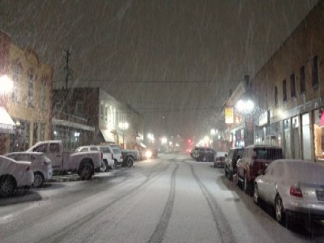
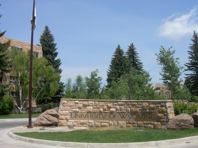
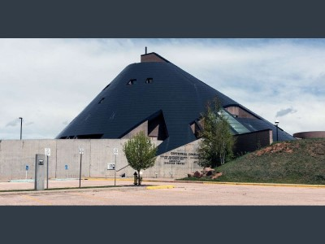
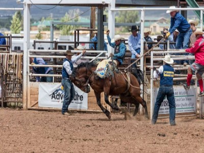
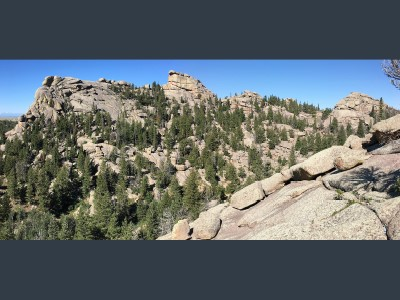

Picture by Jimmy Emerson, DVMCC2.0 Licensesizing changes were made
Downtown Laramie
Downtown offers a lot of bar-style restaurants where you can go order lots of good food and celebrate with friends. There are also plenty of antique and specialty stores offering a variety of services!

Picture by Jimmy Emerson, DVMCC2.0 Licensesizing changes were made
University of Wyoming
The focus-point of the town of Laramie is definitely the University of Wyoming. It boasts a multitude of facilities open to both the public and its students. Its dorm buildings are also the tallest buildings in the state of Wyoming!

American Heritage Center
The University of Wyoming has many facilities that serve to preserve and teach the community; One of these facilities, the American Heritage Center, serves to document and observe the findings of Native Americans and much more.

County Fairs/Rodeos
Many times a year, the city of Laramie will host fairs and events that everyone can participate in. Some of the most popular ones are the Rodeos, but the fair is a close contender; Located along the entirety of 1st and 2nd St!

Picture by Fredlyfish4CC4.0 Licensesizing changes were made
{kind=link}
Explore the Wilderness
Just outside of the city there are a bunch of fun activities to partake in; No matter if you are with a group or a lone-survivor, there are activities for you! The most common activities that locals participate in are hiking, camping, fishing, and 4-wheeling. We encourage everyone to tryout something.